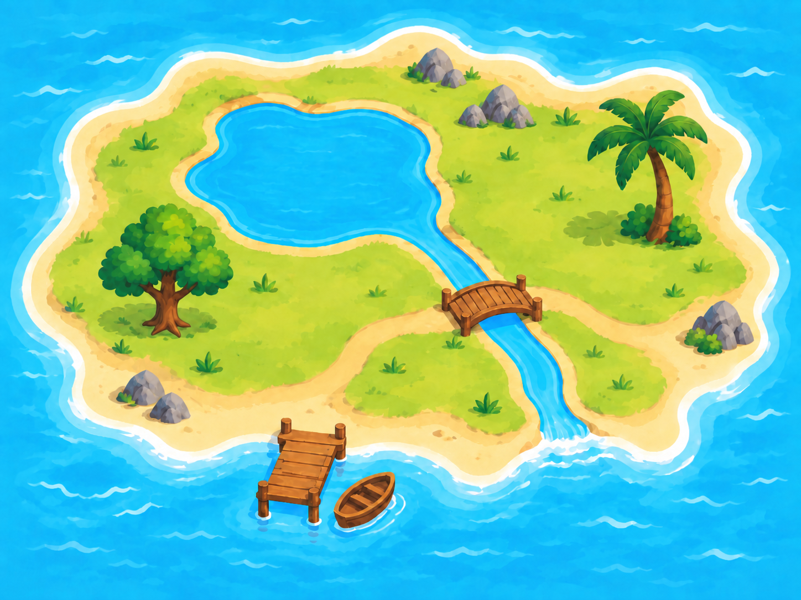

בכל משחק שלושה מקומות מתוך מאגר של 15. התבוננו בתיבה במשך חמש שניות, ואז תארו את המקום במילים שלכם. אפשר להשתמש בשני עצמים ובכיוונים שביניהם.
לאחר ניסיון ראשון יופיע כפתור רמז. תיאור עמום יבקש דיוק; מיקום שגוי יאפשר ניסיון חוזר. הצלחה נקבעת כשהצעת המחשב קרובה למיקום המקורי, בטווח של פחות מחצי משבצת.
במסך הצירים העיגולים המלאים מציינים את המקומות המקוריים. אפשר להציג בנפרד את הניחושים האחרונים בקו מקווקו, או להציג שוב כל תיבה. איפוס זמין בכל שלב.